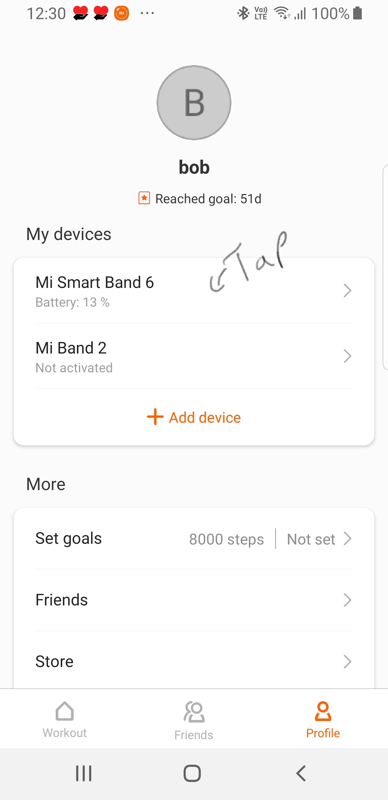
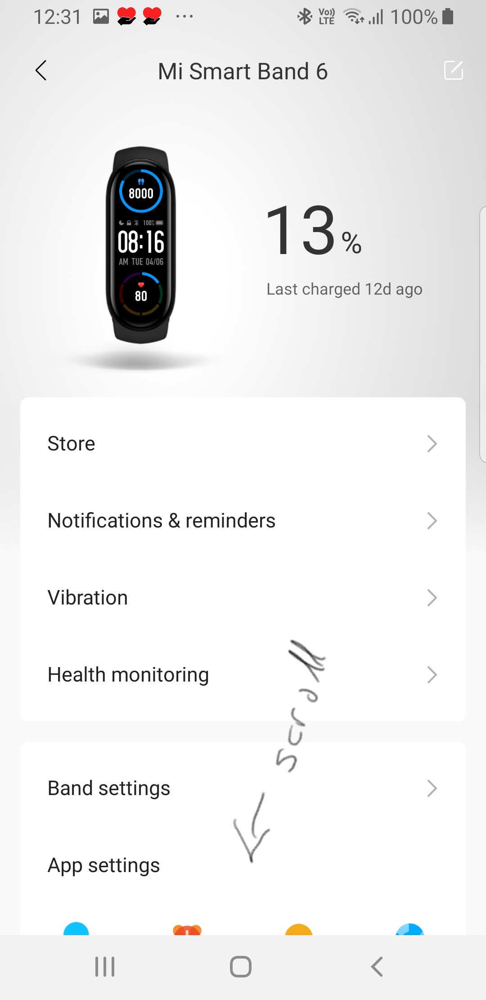
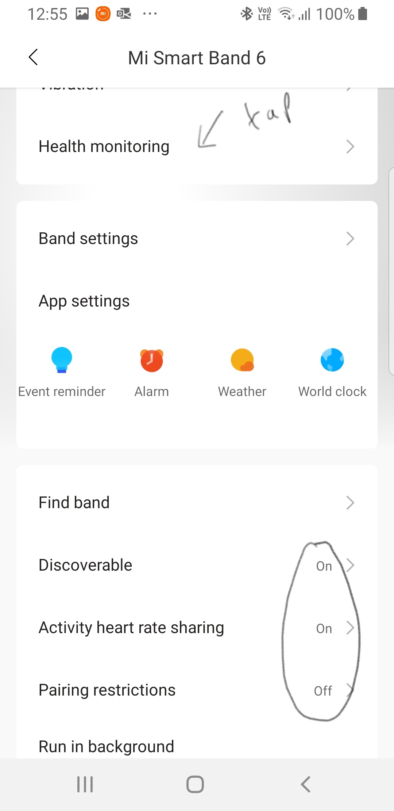
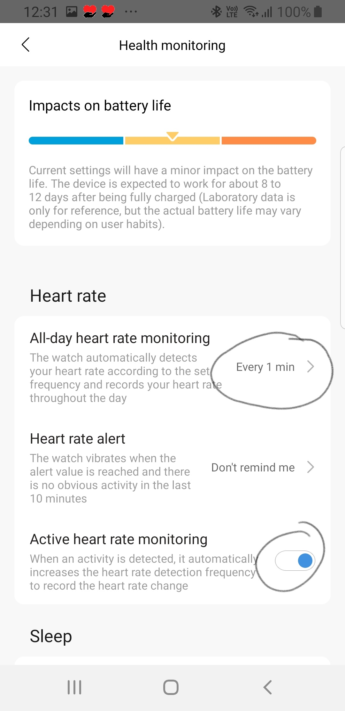

After installing Mi Fit from the Google Play Store, follow Mi Fit's on-screen instructions to get your band connected. If you have difficulty doing this, you can find detailed instructions for the Xiaomi Smart Band 5 (which has slightly different screenshots to Band 6), here. When Mi Fit first connects to the band you will probably have to wait for the band's software to be updated. This should take less than five minutes. Once the connection to the band is working, there are some critical Mi Fit settings that need to be made in order for the Cyfer Health app to work with the app. Make sure that the following ringed settings are correct and change where necessary.
Within the Mi Fit app, go to the Profile tab. Then tap the label showing your band.
Scroll down until you can see the settings shown in the second of the following screenshots, and make sure that your settings match the ringed settings. If they don't, change them.
Once you have ensured those settings match the screenshot, tap on Health monitoring.
 Finally, check that your settings match the two ringed settings. (The "1 minute" setting can also be set to "5 minutes". A value of "5 minutes" would reduce the update frequency but would increase the battery lives of the band and phone.)
Your band and Mi Fit should now be ready to connect to the Cyfer Health app. The final step is to configure Cyfer Health. Configure